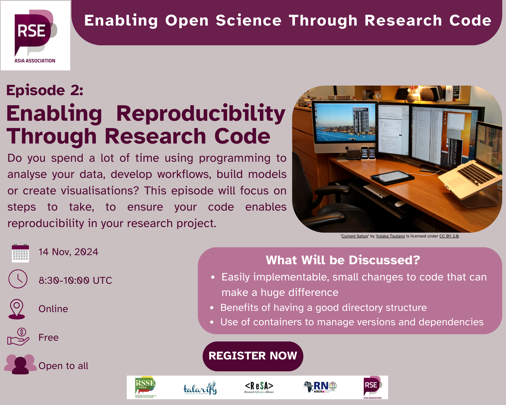

<div style="border: 1px solid #ddd; padding: 1em; border-radius: 8px; margin-bottom: 1em; box-shadow: 2px 2px 8px rgba(0,0,0,0.1);">
  <a href="https://rse-asia.github.io/RSE_Asia/blog/2024-11-30-EOSTRC_ep_2/" target="_blank" style="text-decoration: none; color: inherit;">
    <h3 style="margin-top: 0;">Enabling Open Science Through Research Code: Insights from Episode 2 - Enabling Reproducibility through Research Code</h3>
    
    <p style="margin-top: 0.5em;">This is a blog sharing insights from Episode 2 of the Community Conversation series 'Enabling Open Science Through Research Code'.</p>
    <p style="font-weight: bold; color: #007acc;">Read More →</p>
  </a>
</div>
